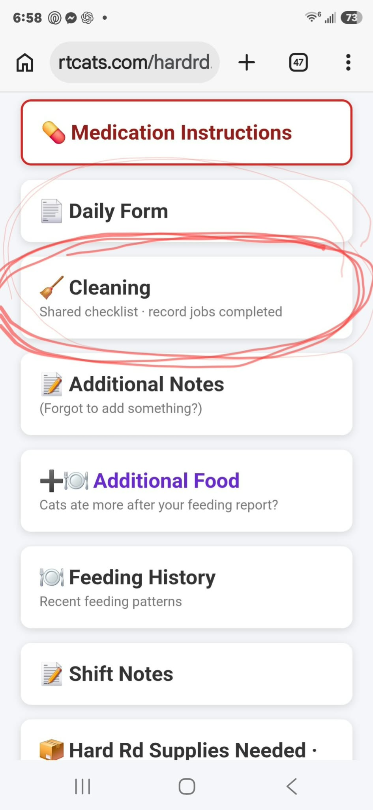

Your computer how-to guide
Rescued Treasures Pet Adoptions • Brighton & Hard Rd • November 2026
Start here. You do not need to learn every button on your first day.
This guide covers the online part of volunteering. Your trainer will show you the hands-on cat care, store procedures, and safe handling.
The routine you will use most
1. Before your visit: arrange training or sign up for your shift in the Schedule Portal.
2. When you arrive: open your store page. Read Important Shift Notices, Medication Instructions, and Shift Notes.
3. Before leaving: submit the Daily Form and save the Cleaning jobs you completed.
Find what you need
First-time setup
Do this with your trainer before working independently.
1. Open New Volunteers
rtcats.com → New Volunteers
Choose the store where you will train: Brighton or Hard Rd. Baytowne is closed; do not use its old links.
1. Request to join your store’s Messenger chat. This is where you coordinate with the store team.
2. Request to join the volunteer Facebook group for announcements and opportunities.
3. Complete the Schedule & Portal Access Request. Use the email address you want recorded on your volunteer account.
2. Start at rtcats.com every time
Type rtcats.com into your browser. Choose the schedule, store page, form, or tool from there so you use the current links.
Do not bookmark rtcats.com or save the schedule, portal, forms, or any individual site links. Do not rely on an old open tab.
Read your store chat before your visit. Ask ANY and EVERY question there. Many people are online to help. DO NOT GUESS.
3. Follow your training checklist
rtcats.com → Training
Open the checklist or guide your trainer assigns. The Training page also has the two refresher guides and quizzes; those quizzes require 80% to pass and allow retakes.
At rtcats.com → SOPs → PSP Cat Room Safe Handling & Cleanup
If access is missing
Tell your trainer or a coordinator the email address you used. If the portal says you are not found or not active, ask them to check your record. Do not create a second account or sign in as another volunteer.
Schedule your visit
Use the Schedule Portal to make changes. Use View Schedule to look at the shared schedule.
At rtcats.com → Open Schedule Portal
Sign up for a shift
1. Enter the email on your volunteer record and select Find Me. Check that the welcome name is yours.
2. Under Sign Up For A Shift, choose Location and Date.
3. Read Available Shifts. Select an available shift; full or locked shifts cannot be selected.
4. If Planned Time appears for a playtime visit, enter or check the time you plan to arrive. Meal times follow the schedule.
5. Select Sign Up. Wait for the success message.
6. Check My Upcoming Shifts to confirm the correct store, date, and shift.
See who is scheduled
rtcats.com → View Schedule
Use the correct store tab and date. Do not type your name directly into the shared spreadsheet; use the portal to sign up.
Cancel or change a shift
1. Find the shift under My Upcoming Shifts. Select Cancel and confirm.
2. Wait for the cancellation message and check that it is removed.
3. To change dates or shifts, cancel the old booking and sign up for the new one.
4. If the change is close to the shift, notify your trainer or store team promptly so coverage can be arranged.
Training or locked shifts
Arrange shadowing with your trainer and confirm your name is listed. If a shift is locked, read the reason and contact your trainer or coordinator; do not book a different shift as a workaround.
Playtime access: your first 30 days and after
For 30 days from your orientation date, you can take playtime slots. After those 30 days, ALL meal shifts for that day must be filled before playtime slots unlock. Check the day’s meal coverage first.
If you are unsure why a slot is locked, ask in your store chat. DO NOT GUESS.
Start your shift on RTCats
Open rtcats.com and choose the store where you are working today.
At rtcats.com → Brighton | At rtcats.com → Hard Rd
Read Important Shift Notices
These appear near the top when there is a current update. Read them before starting care.
CRITICAL: Medication Instructions FIRST
You MUST check Medication Instructions BEFORE starting EVERY shift, every time. Read the current directions for your store. If anything is unclear, STOP and ASK IN CHAT. Never guess.
Open Shift Notes
Read recent notes from previous volunteers so you know what happened before you arrived.
Check Feeding History when useful
See recent food found, given, and added. Use it for context alongside current feeding instructions.
Dashboard is a quick overview
It brings together today’s volunteers, medication instructions, and previous shift notes.

Example: Hard Rd on a phone. The same button names are used on a computer.
Emergency? Use the red phone button
On rtcats.com, use the red phone button under the emergency line to find Scott’s emergency contact details. For an emergency, call; do not wait for a form or chat message to be read.
Finish your Daily Form
Open your store page → Daily Form. Complete it before leaving your shift.
Choose your name and shift
Select your own name. Choose Breakfast, Lunch, Dinner, or Play as appropriate. If you cannot find your name, ask your trainer or a coordinator; do not use someone else’s.
Work through the questions
The form asks about… | What to enter |
|---|---|
Required Daily Verification | Confirm only what you completed or checked for your shift. Review the listed items before checking the box. |
All cats accounted for? | Do NOT mark a cat missing if you know why it is away, such as at the vet or with Scott and Sue. A known absence is not a missing cat. If you cannot account for a cat, ask in chat immediately and report it accurately. |
Health concerns | Select Yes when applicable and describe what you observed. |
Supplies needing restock | Answer and add details if something is needed. |
Medications — CRITICAL | Check Medication Instructions BEFORE starting EVERY shift. In the Daily Form, choose Yes, No, or No medications due according to what actually happened. If anything is unclear, ASK IN CHAT. DO NOT GUESS. |
Additional Activities | Select activities you actually completed, such as play, grooming, socialization, or deep cleaning. |
Shift Notes | Leave clear information the next volunteer needs: food, medication issues, litter observations, behavior, or other important events. |
Food amounts | Answer each question separately: old food found on arrival, fresh cans put down, and additional cans put down before leaving. |
Submit and check
1. Read back your entries for accuracy. A short, specific note is more useful than “everything fine” when something changed.
2. Select Submit. Wait for the form’s confirmation before closing the page.
3. Return to your store page and complete Cleaning as well.
Save your Cleaning jobs
Open your store page → Cleaning. You can do this alongside your Daily Form at the end of your shift.
1. Select Your name, the Date you worked, and your Shift. Check all three before recording work.
2. Check only the jobs you actually completed. Follow the task instructions.
3. If you worked together, open Shared job or a note? and choose the other volunteer under Completed together with. Add a short note if useful.
4. Select Save completed jobs. Wait for the saved message and updated checklist.
Why some jobs are already checked
Task group | When it is tracked |
|---|---|
Each Shift | Separately for each shift. Breakfast completion does not complete lunch or dinner. |
Daily | Once for that day at that store. |
Weekly | For the Monday–Sunday week. |
Monthly | For the calendar month. |
As Needed | Use when the work is actually needed; the list can show when it was last done. |
A saved recurring job is checked and locked for its current period. Two volunteers on the same shift should record a shared job together, rather than claiming the same job twice.
Points and shared work
Cleaning points are NEW and still IN PROGRESS. Sally, Mak, and Stacy are working on task values. If a job says Points to be set, a value has not yet been assigned. Please keep recording completed work while the system is being set up. For a shared job, assigned points are divided equally between the two people.
Something needs attention?
Use Report something that needs attention under the relevant task. Select your name and shift first, then describe the issue clearly. Save any selected completed jobs before using the reporting button.
A report can appear beneath the task as Needs attention. Reporting a problem does not record a completed job. For a correction or an issue with a locked task, ask a cleaning coordinator.
Use these only when needed
You do not have to use every button on every shift.
Additional Notes: forgot something in your report?
1. Open your store page → Additional Notes.
2. Select your name and shift. Add the information you forgot or the update the next volunteer needs.
3. Submit and wait for confirmation.
Use this for a follow-up note; you do not need to submit a second full Daily Form just to add one detail. Read recent updates through Shift Notes.
Additional Food: added food after submitting?
1. Open your store page → Additional Food.
2. Select Volunteer, Date, and Shift.
3. Under Additional food put down, record only food added after your original feeding report. Add a short note if useful.
4. Select Add to Feeding History and wait for the confirmation.
Supplies Needed: check before asking
1. Open your store page → Supplies Needed. Read the existing list first.
2. If the item is already listed, do not add a duplicate.
3. For a new need, select Add Supplies. Enter What do we need?, useful details, and your name.
4. Select Submit Request and check that it was added.
Manage Supplies is for coordinators and requires their PIN. Volunteers do not need it to view the list or add a request.
Feeding History and Dashboard
Feeding History lets you look back at food found, given, and added. You can filter the date range, weekday, or shift. Dashboard is a convenient overview; it is not another report to submit.
How-to guides
rtcats.com → Training → HOW TO Guides
Use these guides and the SOP for the care task your trainer is teaching. Ask your trainer before doing an unfamiliar task.
Your quick end-to-end checklist
Keep this page handy for your first few shifts.
When | What to do |
|---|---|
Before the visit | Confirm your booking or shadow arrangement. Check the date, store, and time. Read store chat updates. |
On arrival | Open the correct store page. Read shift notices, Medication Instructions, and Shift Notes. |
During the shift | Follow your trainer and current instructions. Keep track of work, food amounts, and anything the next volunteer should know. |
Before leaving | Submit the Daily Form. Save completed Cleaning jobs. Wait for confirmation on both. |
Only if needed | Use Additional Notes for a forgotten update, Additional Food for food added after reporting, and Supplies Needed for new requests. |
If something does not work
Problem | What to try |
|---|---|
Portal cannot find me | Use the email on your volunteer record. Ask your trainer/coordinator to check access. |
My name is missing from a form | Ask your trainer/coordinator to check the list. Never choose another volunteer’s name. |
A shift is full or locked | Read the message. Ask your trainer/coordinator about your options. |
A page says Loading or shows old information | Wait briefly, then refresh. Save or copy any unsent notes first. Recheck the store and date. |
I am unsure whether it saved | Check the confirmation and current list/history before repeating a submission. |
I saved the wrong Cleaning entry | Contact Sally, Mak, or Stacy with the store, date, shift, and task. |
I cannot attend | Cancel in the portal. Notify the store team promptly if coverage is at risk. |
Something is urgent | Use the red phone button on rtcats.com under the emergency line for Scott’s emergency contact. Call for emergencies; do not wait for a form or chat reply. |
One starting point: rtcats.com
Type rtcats.com into your browser each time, then select what you need. NEVER save or bookmark the schedule, forms, or individual RTCats links. Do not bookmark rtcats.com itself.
Updated November 2026. Start at rtcats.com each time and ask questions in your store chat.